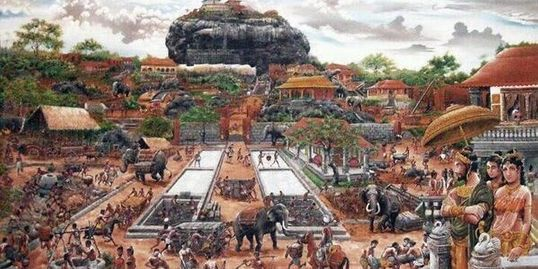
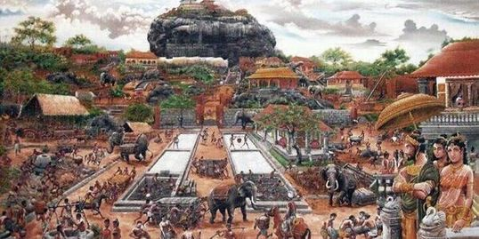

History of Kandy
Beginning in the 3rd century B.C., the country was converted to a pure form of Indian Buddhism that would continue to be practised in the future. The famous tooth of Buddha, a relic symbolising a 4th-century tradition that is often linked to royalty, was brought to Sri Lanka. From this time on, the Royal Palace and the Temple of the Tooth have been associated with the administrative and religious functions of Sri Lanka's capital city.
Anuradhapura enjoyed the status of capital city from the 4th century B.C. until the 8th century A.D., when it was replaced by Polonnaruwa, which was capital until the 13th century. From 1592 until the 19th century, Kandy was the capital city and thus the home of the Royal Palace and the Temple of the Tooth.
Conquered by the Portuguese in the 16th century and by the Dutch in the 17th century, Kandy preserved its independence until it finally submitted to the British in 1815.
Since then, Kandy has preserved its function as the religious capital of Sri Lanka and a place of pilgrimage for practioners of the original form of Buddhism.
Facts About Kandyan history
- 1History records Kandyans used guerilla warfare tactics to protect the city
- 2Kandy was first established by Vikramabahu the 3rd
- 3Kandy is the home of the Temple of the Tooth Relic
- 4 Kandy was the last capital of the ancient kings era of Sri Lanka
 
